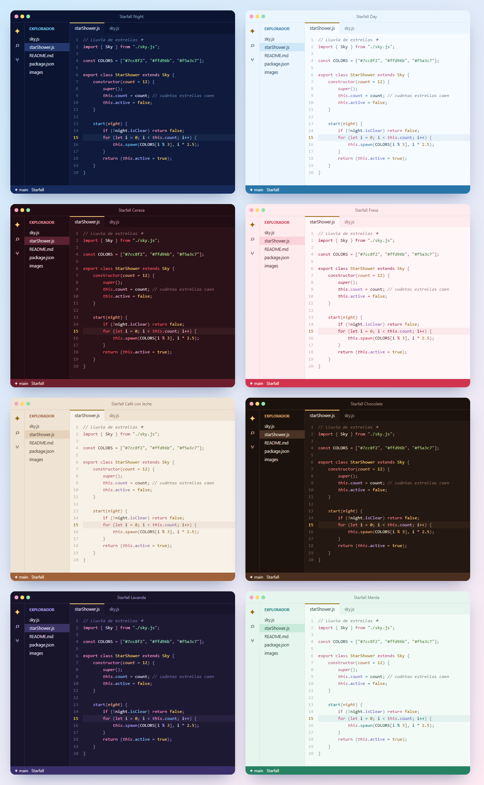
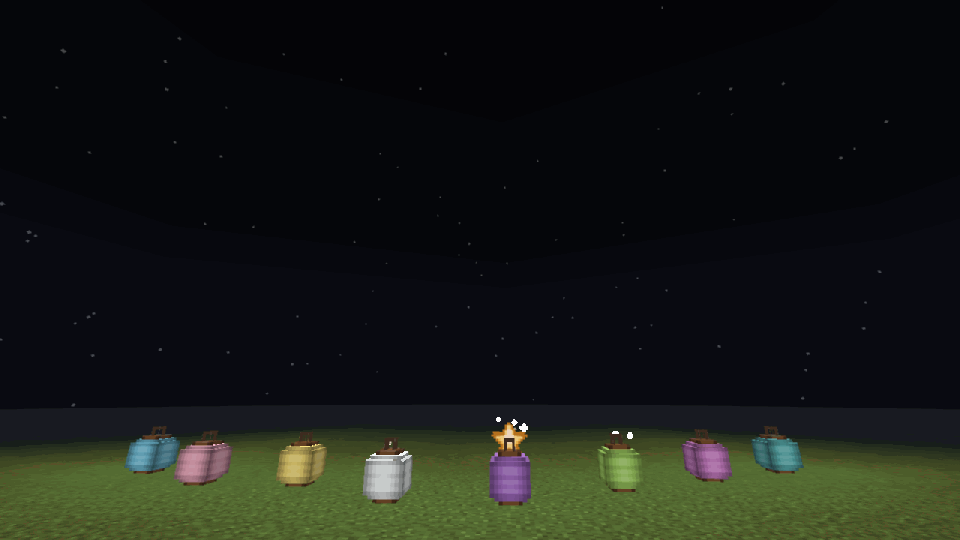
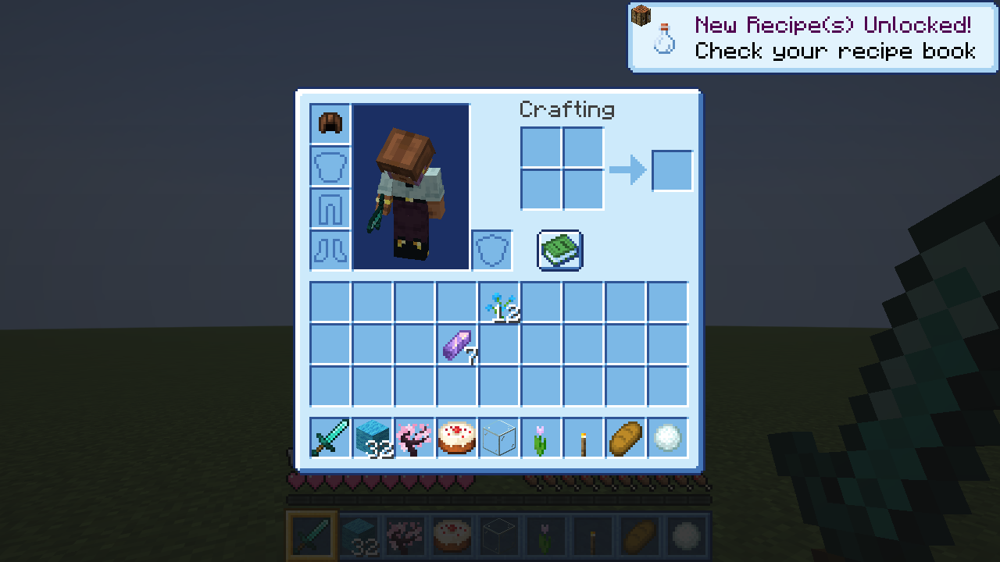
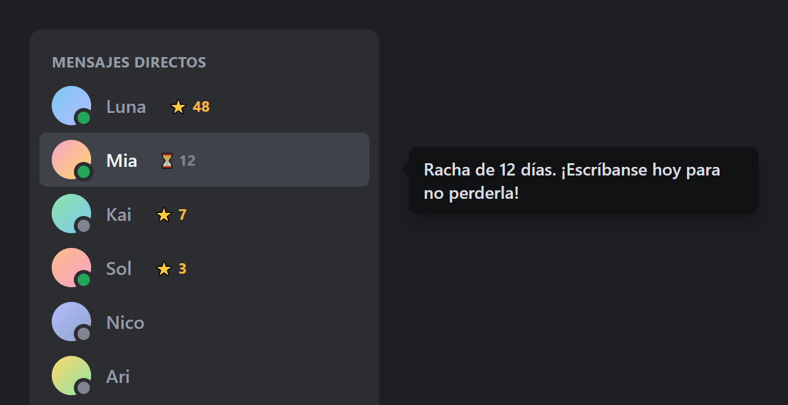

VS Code · tematheme
Starfall Theme
8 temas para VS Code con colores bonitos.
8 VS Code themes in pretty colors.
- JSON
- VS Code
- shiki

Empezó con el azul del cielo y ahora son 8 temas: Night y Day en azul, Cereza y Fresa en rojo, Café con leche y Chocolate en café, Lavanda en morado y Menta en verde. Todos tienen la estrellita amarilla en el cursor.
It started with sky blue and now there are 8 themes: Night and Day in blue, Cereza and Fresa in red, Café con leche and Chocolate in brown, Lavanda in purple and Menta in green. All of them have the little yellow star cursor.
RojosReds
Cereza, oscuro color vino, y Fresa, rosita clarito.
Cereza, dark wine red, and Fresa, light pink.
CafésBrowns
Café con leche, suave y cálido, y Chocolate, profundo y pesado.
Café con leche, soft and warm, and Chocolate, deep and rich.
Se lee bienEasy to read
Si un color queda pálido sobre el fondo, se oscurece solo hasta que se lea claro.
If a color looks too pale on the background, it darkens itself until it reads clearly.
Cursor estrellaStar cursor
El cursor y la línea actual se pintan de amarillo estrella.
The cursor and current line number glow star yellow.
Cómo se instalaHow to install
- Descarga el archivo
.vsix. En VS Code abre las extensiones, pulsa ··· → Instalar desde VSIX… y elígelo.Download the.vsixfile. In VS Code open Extensions, click ··· → Install from VSIX… and pick it. - Pulsa
Ctrl + K,Ctrl + Ty elige el tema que más te guste.PressCtrl + K,Ctrl + Tand pick your favorite.
Otros proyectosOther projects

StarfallLluvias de estrellas fugaces para tus noches en Minecraft.Shooting star showers for your Minecraft nights.
Cielo cuteTu inventario, tus botones y tu barra rápida en azul cielo.Your inventory, buttons and hotbar in sky blue.
RachasCuántos días seguidos llevas hablando con alguien.How many days in a row you've been talking to someone.